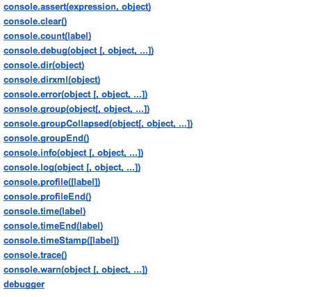
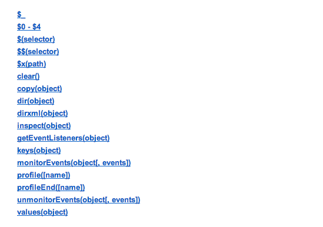

Chrome Dev Tools
for the inefficiently lazy developer
aka Me!
Owain Williams
Front-End Engineer @ Toushay
Curator @ Ember Weekly
Covered in this talk
- Quick Tour
- Tips + Tricks
- Tools + Resources
NOT Covered in this talk
- Introduction to developer tools
- Deep dive into features
- Firefox Dev Tools - sorry :(
- IE - because it has shit developer tools!
Let me in!
or right-click of course.
There are a ton more shortcuts btw!
Docking

- Docked bottom
- Docked right (widescreens)
- Undocked Window
Elements
View and edit the loaded web page's DOM and CSS.
- Drag n Drop Elements
- $0, $1, $2, ...
- Force Element State, Colour Picker, etc
- Event Listeners
- DOM Breakpoints
Network
Records detailed information about each network operation in your application.
load+DOMContentLoadedevents- Customize displayed data (right-click)
- HAR
window.performance
Snippets
Allows you to create, store and run JavaScript within the Sources tab.

Console
- A place to log diagnostic information
- A shell prompt where you can enter commands and interact with the document
- Console Settings
- Console API
- Commandline API
Console Settings

Console API

Commandline API

Sources

Sources
- Fuzzy Search
- Pretty Print
- Local Modifications
Breakpoints
- Conditional break point
- Pause on exception
- Toggle breakpoints
Mobile Emulation
- Screen Size
- Geolocation
- Touch
- User Agent
Profiles

Timelines

Tools
- Chrome Canary
- Ember / Angular Inspectors
- Node Inspector
Resources
Thank You
This mess was thrown together by
Owain Williams
@owz